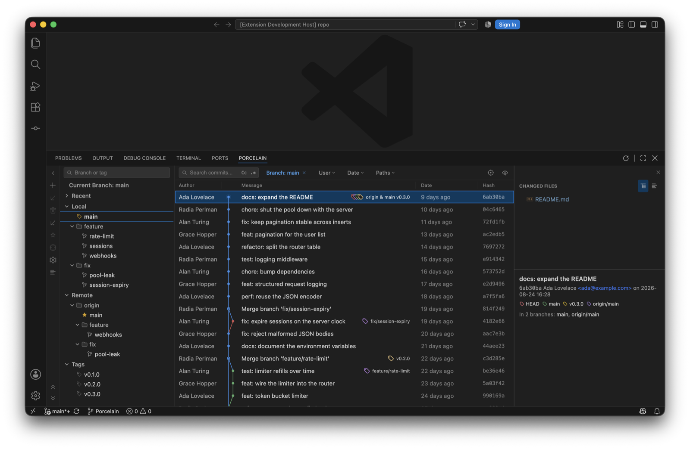

Switch editors, not your Git workflow.
Porcelain brings the Git workflow from JetBrains IDEs to VS Code and Cursor: a branch tree beside a compact commit graph, a Commit tool window where the checkboxes are the commit, Shelf and Stash, branch comparison, interactive rebase, blame, floating diff windows and a three-way merge editor. I built it because I'd moved editors and didn't want to relearn ten years of Git habits, and it's for anyone else in the same position. It's free and MIT licensed, and it's a fork of BranchShift, which itself began as a fork of jet-git.
It's pre-1.0. Everything on these pages is shipped and I use it daily, but there are rough edges, and a setting or command ID may still change in a minor version before 1.0. The roadmap has what's left.
Porcelain is an independent open-source project with no affiliation to JetBrains, Microsoft, GitHub or Cursor. It uses none of JetBrains' code; eighteen (18) icons in the Commit tool window come from the Apache-licensed IntelliJ Platform icon set, unmodified.

git rebase -iInstall from the Marketplace listing, or from a terminal:
code --install-extension sultanofcardio.porcelainEvery GitHub release has a .vsix attached for offline installs: run Extensions: Install from VSIX… from the Command Palette. That route works in Cursor too. Porcelain isn't on Open VSX yet (the registry Cursor's Extensions view reads), so the VSIX is the way in there for now.
You'll need VS Code 1.86 or later, for the detached windows the diff surfaces use, and git on PATH. Porcelain runs git against your workspace, and a workspace's own hooks and configuration can execute commands, so it stays disabled until the workspace is trusted. It doesn't run in virtual workspaces either, as there are no local files for git to read.
Each of those has its own page in the sidebar. If you already know IntelliJ's Git, the shortcuts page is probably the one you want first.